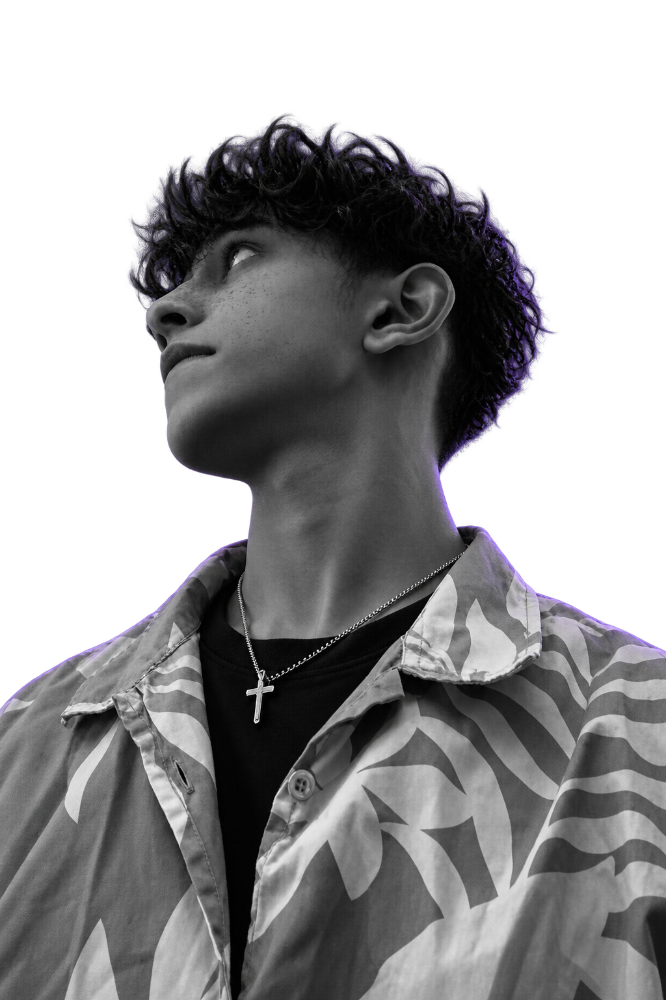

Camera–LiDAR Perception
01Exploring 3D perception through sensor calibration, point-cloud processing, and visualization at IIIT Dharwad.
Hey, I’m
I turn ideas into working software.
Building across apps, cloud, and data — with a little curiosity and a lot of code.

From connecting communities to exploring machine perception. Here’s what I’ve been building.
Exploring 3D perception through sensor calibration, point-cloud processing, and visualization at IIIT Dharwad.
An AWS S3 security analyzer with vulnerability reporting, email alerts, and one-click auto-fix.
A patient community app bringing authentication, chat, and patient verification into one connected experience.
A college management app for students, staff, and canteen operations, built around real-time data.
Flutter applications for student banking and library data management.
I like understanding how things work.
Then figuring out how to make them better.
I’m an MCA student with hands-on experience in Python, Flutter, and web development. My projects span community apps, college management, cloud security, and AI/ML-based 3D perception.
I’m especially interested in the places where software meets real-world problems — connecting people, making cloud infrastructure safer, and helping different sensors work together.
Looking for an internship where I can contribute, learn from a team, and build things that matter. Open to hybrid opportunities.
Developing a 3D perception application integrating Camera–LiDAR, computer vision, calibration, point-cloud processing, and real-time visualization.
Continuing my studies in computer science while building practical software projects.
A foundation in computer science and application development. GPA: 8.2.
Cloud computing internship certification listed in my résumé.
A practical stack for building interfaces, connecting backends, working with data, and exploring the cloud.
Interfaces people can use.
The logic behind the experience.
Infrastructure with intention.
Finding meaning in the details.
Problem-solving. Analytical thinking. Adaptability. Communication. Teamwork.
Have an opportunity, a project, or just a question? I’d love to hear from you.
avjazeel2003@gmail.com